Publishing HTTP Commander through Forefront Threat Management Gateway 2010
This article provides guidelines for publishing HTTP Commander application in Forefront TMG 2010.
HTTP Commander publishing does not essentially differ from publishing any other Web site,
see Creating a Web publishing rule.
We assume that HTTP Commander was installed in the Internal network and
we need to provide secure access to it from the outside, for example, from the Internet.
Forefront TMG protects access to the Web file manager, users must authenticate to the firewall
before they are allowed access to the internal resource.
After authenticating on the firewall user credentials are delegated to the target web server.
That means that the client do not need to authenticate twice: first to the firewall and second to HTTP Commander.
The user is automatically logged in to HTTP Commander once it's authenticated to Forefront.
Users in the internal network authenticate to Web file manager as usual, Forefront TMG is not involved.
You may allow and force HTTPS connection from client to Forefront and/or from Forefront to the web server.
Network topology
Before we start configuring Forefront TMG and HTTP Commander, let's examine network topology of the test network.
See Planning Forefront TMG network topology.
In our example Forefront plays a role of Edge Firewall, it connect two networks: internal and external.
The internal network is a private network of an organization that is connected to other world though Forefront TMG machine.
It uses private range of IP addresses.
The external network is yet another private network connected to the Internet through another firewall.
In your case the External network may be the Internet.
All machines in the Internal firewall are joined in domain test3.element-it.com.
We used a valid top-level domain com in the Internal network, although
you'll typically use pseudo-top-level domains like local, loc in such cases.
Note that the test3.element-it.com domain is not known in the External network, it is in used in the Internal network only.
Internal network
| IP addresses | 192.168.92.0/24 |
|---|
| Default gateway | 192.168.92.2 |
|---|
| DNS server | 192.168.92.3 |
|---|
| Domain | test3.element-it.com |
|---|
External network
| IP addresses | 192.168.1.0/24 |
|---|
| Default gateway | 192.168.1.1 |
|---|
| DNS server | 192.168.1.1 |
|---|
The following hosts are located in the Internal network.
win2008svr2
| Roles | Forefront TMG 2010 |
|---|
| Domain | test3.element-it.com |
|---|
| Computer name | win2008svr2 |
|---|
| Operating System | Windows Server 2008 R2 x64 |
|---|
| Network interface 1 |
|---|
| IP address | 192.168.1.23/24 |
|---|
| Default gateway | 192.168.1.1 |
|---|
| DNS server | 192.168.92.3 |
|---|
| Network interface 2 |
|---|
| IP address | 192.168.92.2/24 |
|---|
| Default gateway | |
|---|
| DNS server | 192.168.92.3 |
|---|
| |
|---|
| |
|---|
win2008svr3
| Roles | Domain controller, DNS server |
|---|
| Domain | test3.element-it.com |
|---|
| Computer name | win2008svr3 |
|---|
| Operating System | Windows Server 2008 R2 x64 |
|---|
| Network interface 1 |
|---|
| IP address | 192.168.92.3/24 |
|---|
| Default gateway | 192.168.92.2 |
|---|
| DNS server | 192.168.92.3 |
|---|
win2008svr4
| Roles | Web server (HTTP Commander) |
|---|
| Domain | test3.element-it.com |
|---|
| Computer name | win2008svr4 |
|---|
| Operating System | Windows Server 2008 R2 x64 |
|---|
| Network interface 1 |
|---|
| IP address | 192.168.92.4/24 |
|---|
| Default gateway | 192.168.92.2 |
|---|
| DNS server | 192.168.92.3 |
|---|
Note. In this example we use a separate server to host HTTP Commander.
That is not a requirement, you may install the web file manager on the domain controller.
That may be not the best chose from the security point of view, but you spare one server.
In this example, we consider the most typical scenario when the Web file manager was allocated an independent server.
From the outside the win2008svr4 server will be accessible under name win2008svr4.test4.element-it.com.
win2008svr4 name resolves to 192.168.1.23, that is the IP address of
the Forefront TMG server in the external network.
Configuring Forefront TMG
For general instructions on publishing a Web site see
Publishing a single Web site or load balancer over HTTP and
Publishing a single Web site or load balancer over HTTPS.
Step 1. Create Web Listener
We demonstrate here the final result of creating a Web Listener.
You should use the Web Listener Definition Wizard to create the listener
and then tweak the remainder properties in the properties dialog.
We sum up the most important options here. Refer to the screenshots below for details.
The Web Listener was named "HttpCommander Listener".
It is configured to listen on the external interface of the Forefront TMG machine,
on standard ports 80 (Http) and 443 (Https).
Https is not strictly speaking required, but for secure connections it's likely you wish configure it.
If you need Https support, you should prepare and install a certificate on the Forefront machine.
The certificate subject name must match the name of the Web Server in the External network, in our case win2008svr4.test4.element-it.com.
Note, that you may use only one certificate per IP address.
If you need to publish more than one server in the Internal network,
you should prepare Subject Alternative Name certificate that include all required server names.
For example, you may need to publish win2008svr5, win2008svr6 servers in your Internal network.
Then the certificate must include all these names: win2008svr4.test4.element-it.com,
win2008svr5.test4.element-it.com, win2008svr6.test4.element-it.com.
We selected a HTML Form Authentication as client authentication method.
When a client tries to access the Web file manager it will be presented with a logon form
shown on the Web logon form screenshot.
The client should enter his/her user name and password in the test3.element-it.com domain to authenticate to HTTP Commander.
Authentication validation method — LDAP to Active Directory.
You must configure an LDAP server set, in our case consisting of only one server —
win2008svr3 domain controller.
HttpCommander listener in toolbox
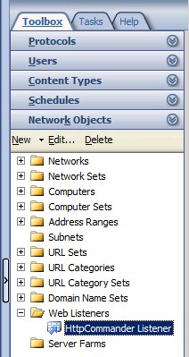
Web listener, General tab
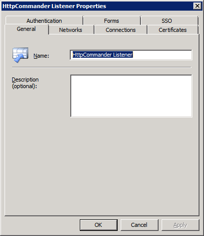
Web listener, Networks tab
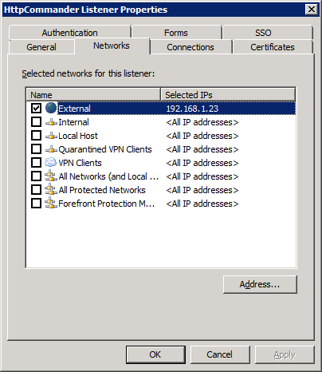
Web listener, Networks tab, External Network Listener IP selection.
To open the dialog, on the Networks tab, select external network, click Addresses button.
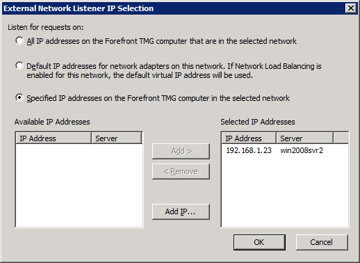
Web listener, Connection tab
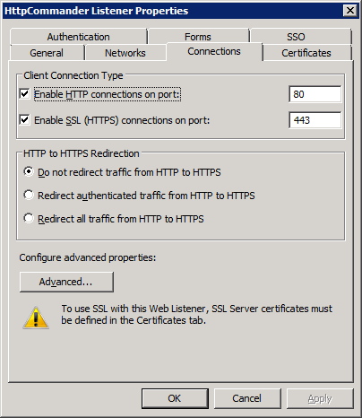
Web listener, Certificate tab
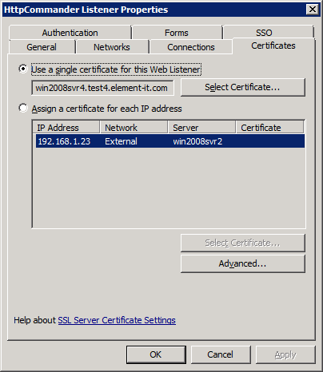
Web listener, Authentication tab
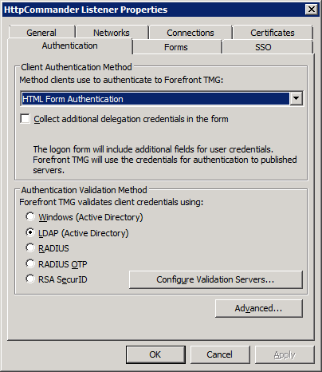
Web listener, Authentication tab, LDAP servers.
To open the dialog, on the Authentication tab, click "Configure Validation Servers" button.
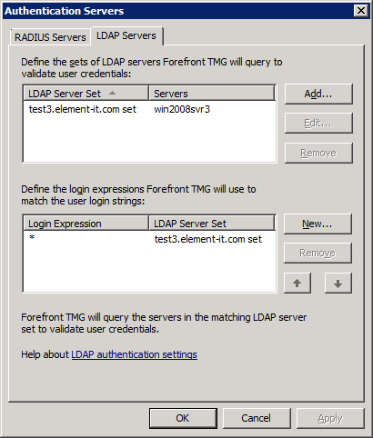
Web listener, Authentication tab, LDAP servers, LDAP server set.
To open the dialog, on the Authentication tab, click "Configure Validation Servers" button,
select "test3.element-it.com set", click Edit button.
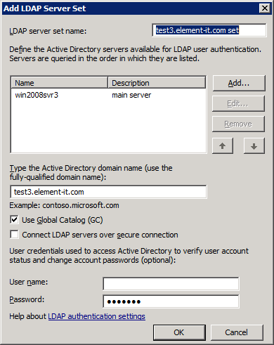
Web listener, Authentication tab, Advanced options.
To open the dialog, on the Authentication tab, click Advanced button.
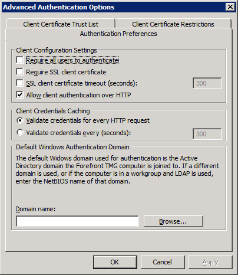
Web logon form. You must provide valid credential in test3.element-it.com domain before you can access HTTP Commander application.
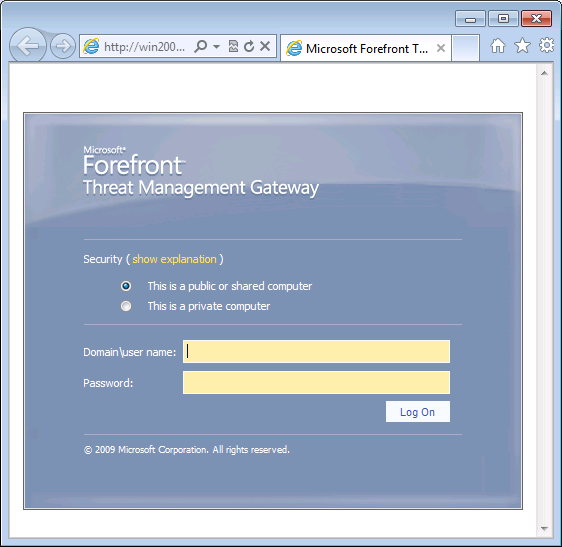
Step 2. Create Web publishing rule
We demonstrate here the final result of creating a Web Publishing Rule.
You should use the Web Publishing Rule Wizard to create the rule
and then tweak the remainder properties in the properties dialog.
We sum up the most important options here. Refer to the screenshots below for details.
The rule was named "HttpCommander on win2008svr4".
We specified that this rule applies to any source address (Anywhere source on the From tab).
Another reasonable value for this option is External, that is any address except those allocated for the Internal network.
The target server specified on the To tab must be the name of the published server in the Internal network.
In our example it is win2008svr4.test3.element-it.com.
That name must resolve to the IP address of the published server,
if the name is not resolvable, we must provide an alternative resolvable name or
an IP address in the second field on the To tab.
The published server name defines the value of the host header in the HTTP request sent to the published server.
The server name may be important if you configured a number of Web sites on the Web server,
that are bound to specific host names.
On the Listener tab we selected "HttpCommander Listener" that we configured on the previous step.
From the outside our web server will be accessible under name win2008svr4.test4.element-it.com
that resolves to the IP address of the public interface of the Forefront TMG machine.
It's possible that the same server will be available under different names, for example,
HttpCommander.test4.element-it.com, win2008svr4 or whatever you like.
You need to list all these name on the Public Name tab, or select the option to
ignore the host name header (select "This rule applies to": All requests).
Authentication delegation — Basic.
The authentication method selected here must match the authentication method configured on the Web server.
Both HTTP and HTTPS protocol may be used to access the Web file manager.
Note that you need to install a certificate on the web server if HTTPS is in use.
Finally, we selected that only Authenticated users are allowed to access the web server.
All users is not an option since it allows unauthenticated users inside the network.
Note, however, that HTTP Commander requires authentication even if you allowed All users in the Web Publishing rule.
Web Publishing rule in Firewall Policy list
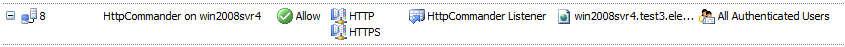
Web Publishing rule, General tab
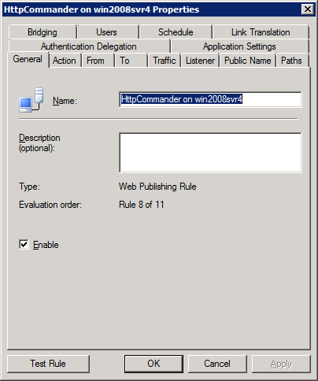
Web Publishing rule, Action tab
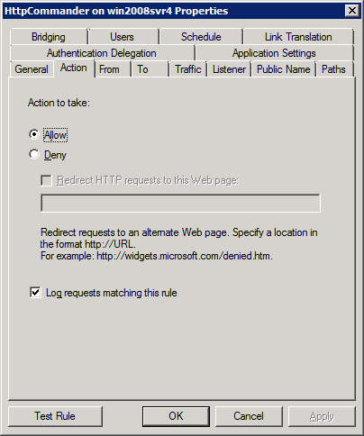
Web Publishing rule, From tab
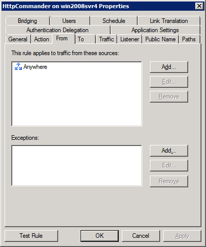
Web Publishing rule, To tab
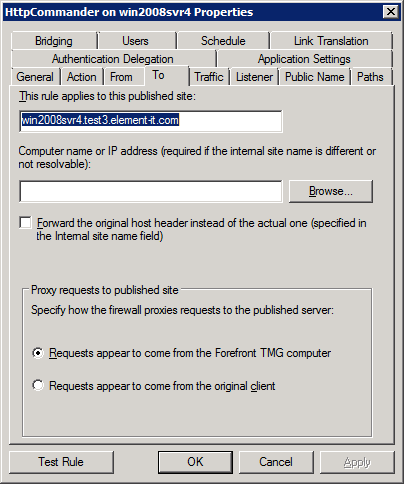
Web Publishing rule, Traffic tab
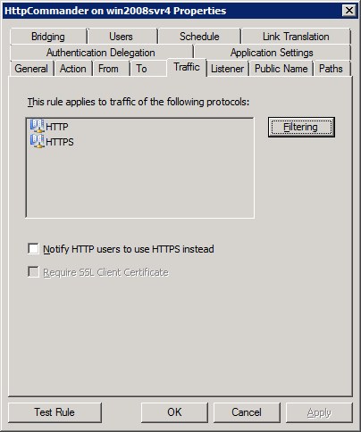
Web Publishing rule, Listener tab
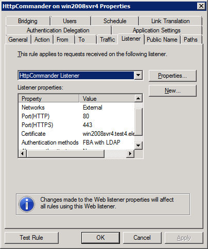
Web Publishing rule, Public Name tab
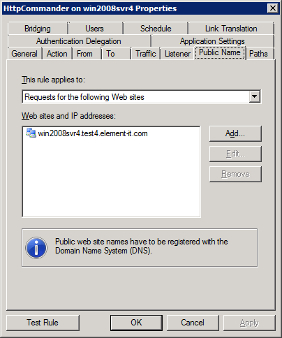
Web Publishing rule, Authentication Delegation tab
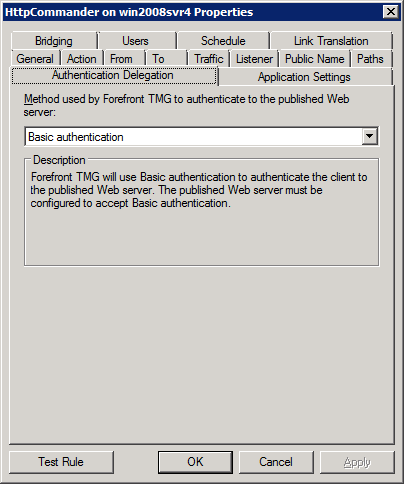
Web Publishing rule, Bridging tab
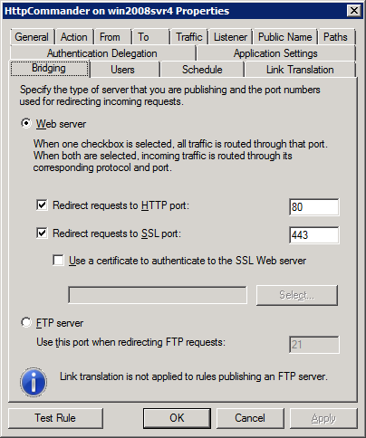
Web Publishing rule, Users tab
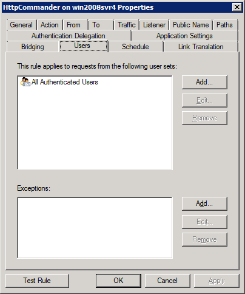
Configuring HTTP Commander
We will not reproduce instruction on installing and configuring HTTP Commander
on Web server, refer to Install HTTP Commander on Windows Server 2008 for detail.
Take HTTP Commander Windows authentication version as the basis.
Here we describe only settings that differ from the default configuration.
Install a certificate on the Web server if you plan to access HTTP Commander over HTTPS protocol.
The Subject name of the certificate must match the published site name selected in Forefront TMG.
Login to HTTP Commander as administrator from the host in your the Internal network.
For example, you may use the Web server machine.
Open Administration panel. On the Settings tab find Active Directory group.
Change the following options:
| Setting | Value |
|---|
| ReadWindowsUsersGroupMembership | true |
|---|
| UseUniversalWayToReadGroups | false |
|---|
| LDAPContainer | LDAP://win2008svr3.test3.element-it.com |
|---|
The LDAPContainer setting is assigned URI to win2008svr3 server — domain controller.

 Web file manager
Web file manager